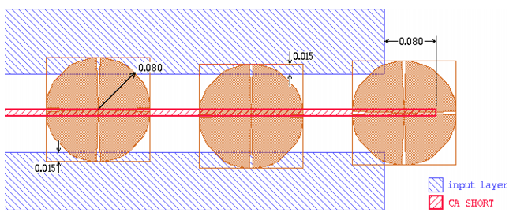
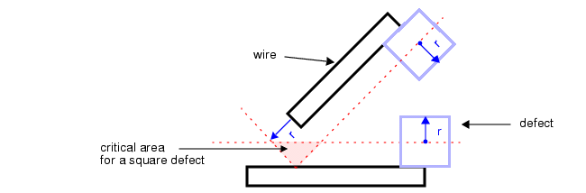

Critical Area for Shorts
The critical
area for shorts is the portion of the design where a short will
occur if the center point of a contaminate lands there.
Figure 1 shows the critical area for a defect shorting parallel wires. Note that the critical area represents only the locus of the defect center points, not the entire defect.
Figure 1. Short Circuit Critical
Area

By default, DFM Critical Area calculates critical area based on square defect particles. Octagons, which more closely model a circular defect particle, may also be used.
Figure 2. Short
Circuits Between Parallel Wires

Figure 3. Short Circuits Between Non-Parallel Wires

DFM Critical Area addresses one basic type of short: that which occurs between two electrical nets between wires on the same layer.